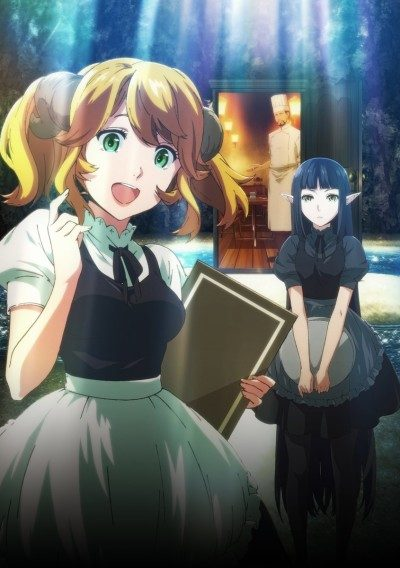
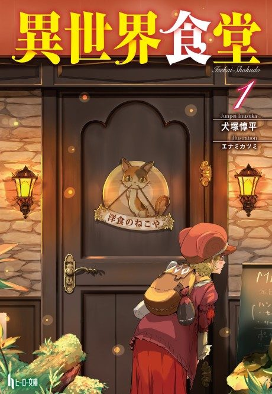

Restaurant to Another World
異世界食堂
After the anime, read the light novel from Volume 6.
7.2AniList score
—Animeter, no votes yet
24episodes, 2 seasons
Rate it or report where you stopped
Anime finished. Where does the story go next?
Start at Volume6
Season 1 covers volumes 1-3 and season 2 goes through volume 5, so start at volume 6. The anime skips many side stories.
135ongoing
Season 1Season 2Start reading here